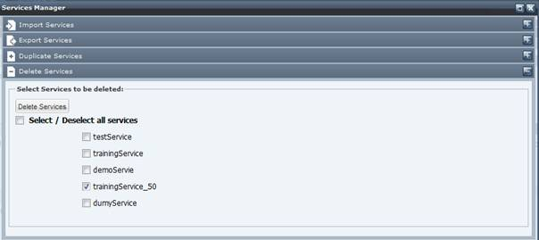
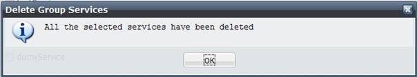

To delete a service follows these steps.
Select the “Service Management” link on the top bar menu then select the “Service Manager” section

In the service Manager pop up select the Delete Services slider tab and select the service(s) you want to delete.

Select the Delete Services button. A pop up window reporting the results of the operation should be displayed.
